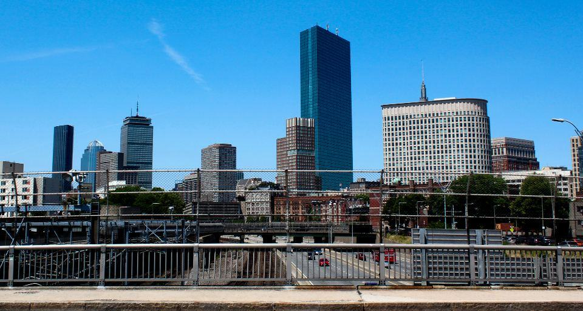

Om Skönvik
Skönvik bildades 1998 när hamnbolaget i Sundsvall sålde sina magasin och kombiterminalen vid Skönviksområdet. Grundidén var enkel: köp och bygg lager där godset redan byter transportslag. I dag äger koncernen 412 fastigheter och omsätter 18,6 miljarder kronor.
Skönvik äger, bygger och driver logistiknoder där järnväg, hamn och E4 möts.
Skönvik bildades 1998 när hamnbolaget i Sundsvall sålde sina magasin och kombiterminalen vid Skönviksområdet. Grundidén var enkel: köp och bygg lager där godset redan byter transportslag. I dag äger koncernen 412 fastigheter och omsätter 18,6 miljarder kronor.
Till skillnad från rena fastighetsbolag driver Skönvik också terminalerna själva. 5 400 medarbetare lastar om containrar, kör truckar och planerar tåg i 38 terminaler – vilket gör oss till hyresvärd och operatör för samma kund.
Ett godsnät byggt på räls
Skönvik bildades 1998 när hamnbolaget i Sundsvall sålde sina magasin och kombiterminalen vid Skönviksområdet. Grundidén var enkel: köp och bygg lager där godset redan byter transportslag. I dag äger koncernen 412 fastigheter och omsätter 18,6 miljarder kronor.
Från hamnmagasin till godsnät
- 1998Skönvik bildas när Sundsvalls hamnmagasin och kombiterminal säljs till ett nytt bolag.
- 2004Första lagret utanför Norrland: 40 000 kvadratmeter i Hallsberg.
- 2011Notering på Nasdaq Stockholm.
- 2016Förvärv av terminaler i Oslo och Taulov.
- 2021Skönvik passerar fem miljoner kvadratmeter uthyrbar yta.
- 2024Logistikparken i Venlo blir den första noden utanför Norden.
Noderna i nätet
46 noder, alla med järnväg, motorväg eller hamn inom två kilometer.
- SundsvallHuvudkontor och koncernens första kombiterminal vid Birsta.
- HallsbergNordens största järnvägsnod, med 1,4 miljoner kvadratmeter lager.
- MalmöTerminal och lager vid Svågertorp, port mot kontinenten.
- JönköpingE-handel och kyllager i Torsvik.
- OsloTerminal vid Alnabru och lager i Groruddalen.
- TampereLager för finsk dagligvaruhandel.
- TaulovDanmarks transportcenter vid Lillebæltsbron.
- GdyniaHamnmagasin och färjeterminal mot Polen.
- VenloLogistikpark vid Rhenkorridoren i Nederländerna.
Senaste nyheterna och pressmeddelanden

Kontakta oss
- Huvudkontor
- Skönviksvägen 14
856 50 Sundsvall - Telefon
- 070-174 06 68
- E-post
- kontakt@skonvik.se
- Öppettider
- Kontoret mån–fre 8–17, terminalerna dygnet runt